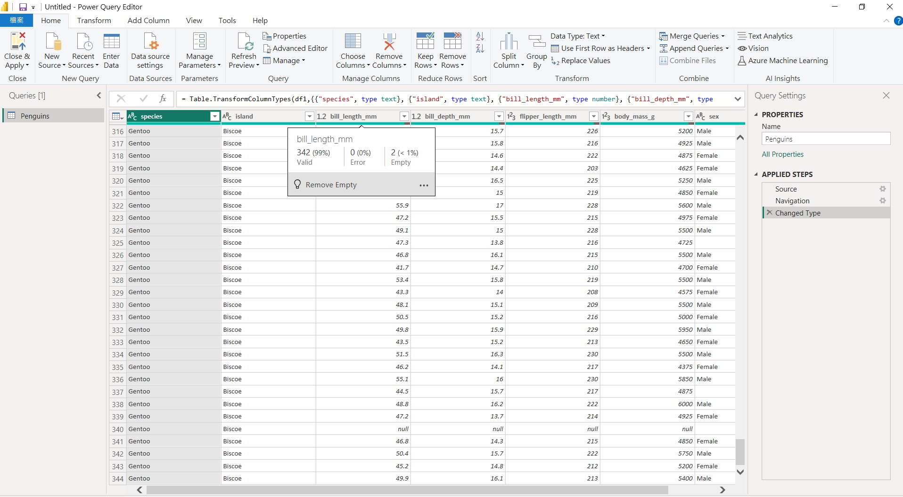
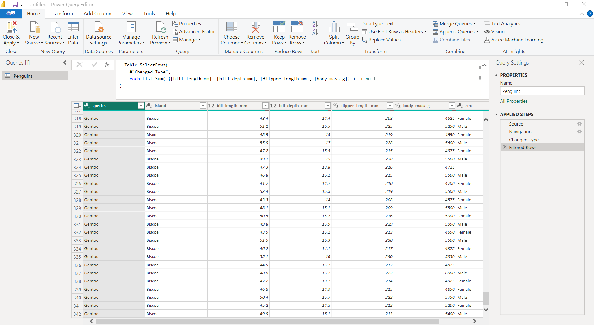
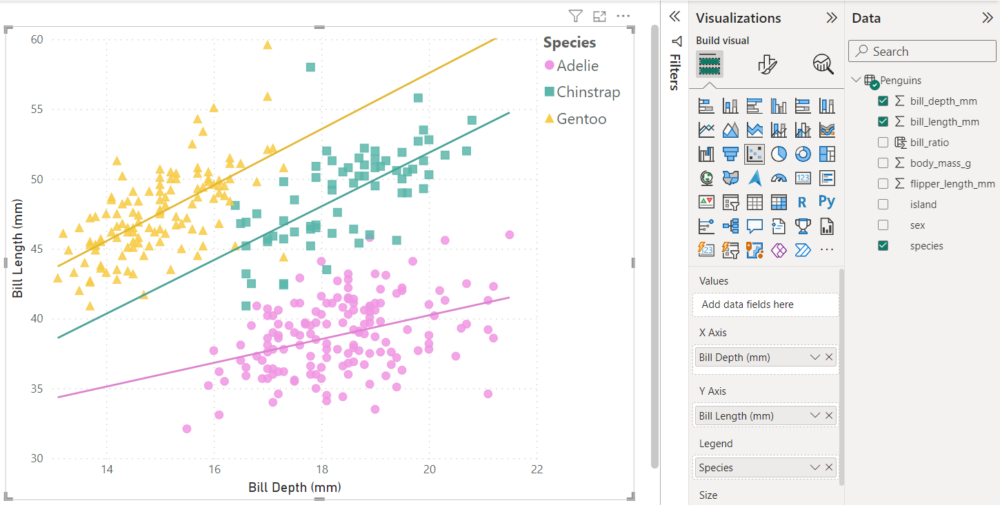
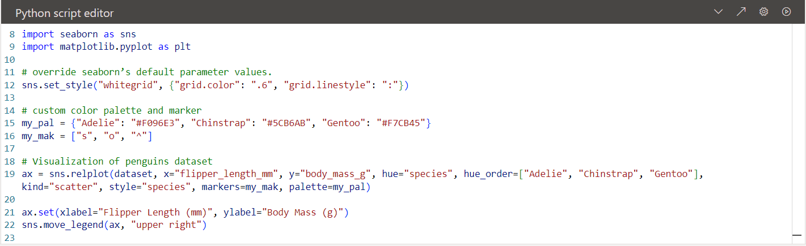
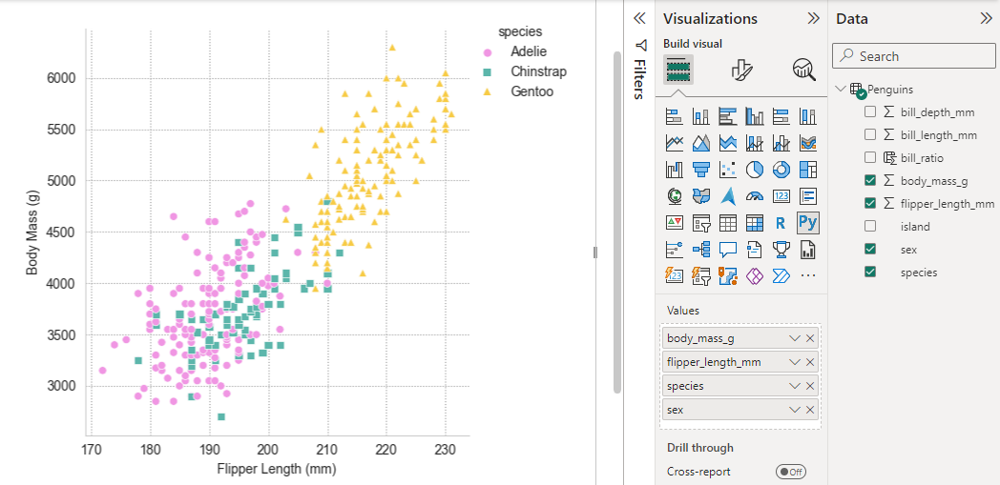
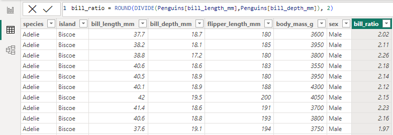
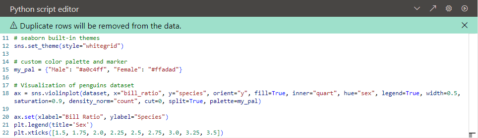
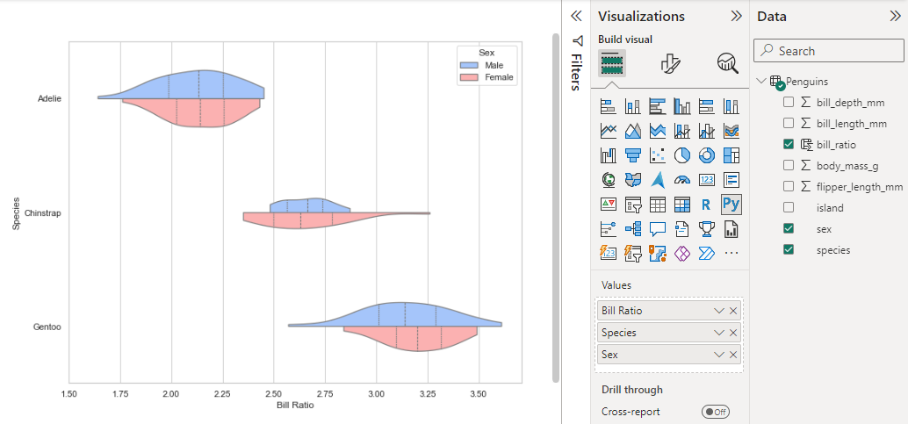
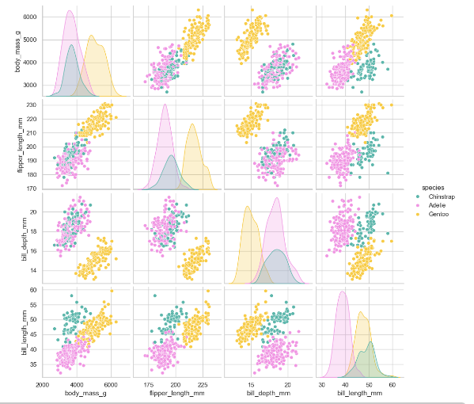
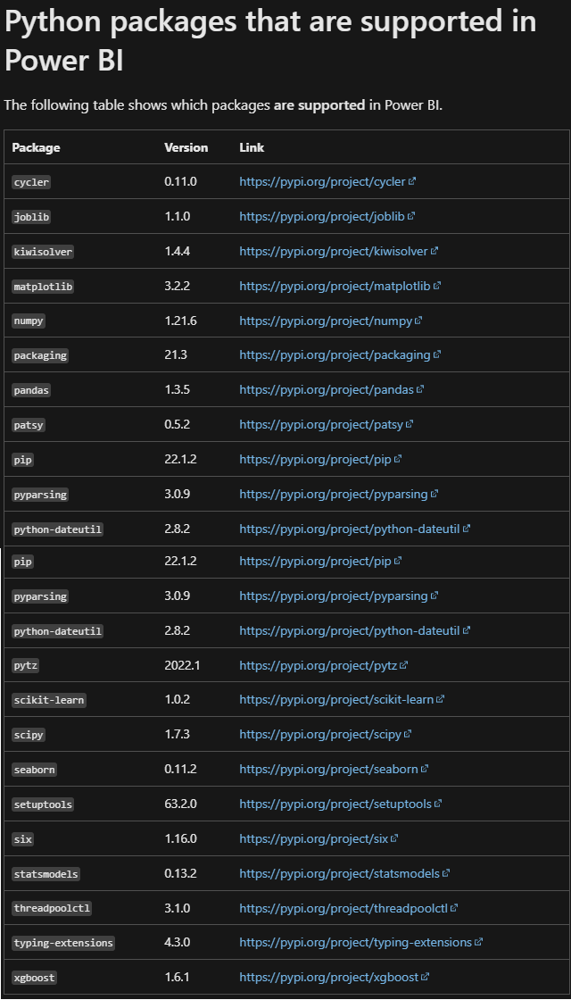

Power BI 中 Python 的優雅應用

Photo by @allison_horst
資料採集
Seaborn is a Python data visualization library based on matplotlib. It provides a high-level interface for drawing attractive and informative statistical graphics.
本次資料集來自 Kristen B. Gorman 博士等人在 Anvers Island 和 Palmer research station 附近的 Palmer Archipelago 進行的長期生態研究計畫。
Get data -> Run a Python script on a local Python installation to import data frames
若新建虛擬環境，記得先 pip install pandas matplotlib seaborn

資料清理
載入資料後先 Transform Data，進到 Power Query，在篩選器可以快速預覽 Data 全貌，可以看到有些欄位含有 null 值

為避免缺失值讓分析結果不準確，bill_length_mm、bill_depth_mm、flipper_length_mm、body_mass_g 這 4 個欄位若皆為 null，則過濾該筆資料。
若之後想回溯原始資料，可利用右側 Applied Steps 步驟列表找到此過濾動作並將之移除，即可取消套用。

資料概覽
經過剛才篩除的處理後，資料集有 342 隻可愛企鵝們，忽略 9 筆性別的資料缺失，3 種企鵝雌雄佔比相當。
Adelie 在本次生態調研的南極洲 3 個島嶼皆有分佈，而 Chinstrap 和 Gentoo 分別生活在 Dream 和 Biscoe 島嶼。

 Figure 1. The marine ecosystem west of the Antarctic Peninsula (a) extends from northern Alexander Island to the South Shetland Islands (b).
Figure 1. The marine ecosystem west of the Antarctic Peninsula (a) extends from northern Alexander Island to the South Shetland Islands (b).
Photo by Kristen B. Gorman, et al.
資料視覺化
散佈圖展示兩個連續變數間的相關性，可以透過 Power BI 內建的 Scatter Chart，也能用 Seaborn 提供的 relplot 繪製 ~
-
Power BI：Scatter Chart
先來看看企鵝的嘴型，3 個品種的企鵝其鳥喙厚度和長度皆呈現正相關，而 Chinstrap 相較之下嘴型最為厚長。

-
Seaborn：relplot
再來看看企鵝的身型，3 個品種的企鵝其鰭肢長度和體重皆呈現正相關，而 Gentoo 相較之下鰭肢長度最長、體重最重。
 
-
Seaborn：violinplot
小提琴圖展示變數分組後資料點的分佈和密度 ~
來觀察不同品種、性別的鳥喙比例，先用 DAX 新增 bill_ratio column 以便後續製圖

Parameters
inner 內部數據預設為盒鬚圖 (box)，這裡以四分位數線 (quart) 表現
density_norm 將密度標準化以決定圖的寬度。預設為 area，每把小提琴都有相同的面積，這裡定為 count，寬度將與 data 數量成正比
 
-
Seaborn：pairplot
變量關係組圖展示資料集多個變數間的成對關係，可以總覽企鵝各部位型態是否具有明顯的關係 ~
bill_length_mm 和其他特徵的關係圖可有效的識別不同企鵝，而 Gentoo 相較於 Adelie 和 Chinstrap 容易識別，因其特徵分佈有顯著的分離。
Gentoo 整體體型較大，具有較扁平的鳥喙，而 Adelie 和 Chinstrap 鰭肢長度和體重相當，但 Chinstrap 擁有更勝一籌的喙長！

Power BI 支援哪些 Python 套件
Power BI 可以支援許多 Python 套件，從匯入、清洗、到視覺化都能整合 Python 處理，讓分析更加彈性 ~~~

Reference：
1. Ecological Sexual Dimorphism and Environmental Variability within a Community of Antarctic Penguins
2. seaborn: statistical data visualization
3. Learn which Python packages are supported in Power BI